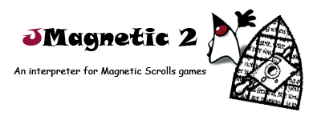

 |
| Version 2.3 Magnetic - An interpreter for Magnetic Scrolls games by Niclas Karlsson Magnetic 2.3 was written by Niclas Karlsson, David Kinder, Stefan Meier and Paul David Doherty. Magnetic and JMagnetic are released under the terms of the GNU General Public License. JMagnetic 2 for Java™ was written by Stefan Meier. Special thanks go to Jan Schliemann - author of magnetiX - for his game images and the highly inspiring design of his Magnetic port for Mac OS X™. |